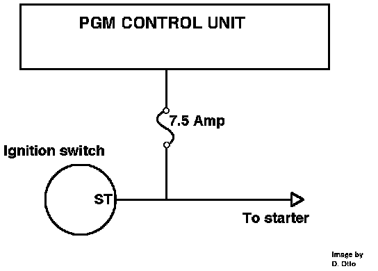

Cranking Signal: Description and Operation
Starter Switch Signal:

The starter signal is generated by the ignition switch whenever it is in the start position. The 12 volt signal informs the control unit the engine is being started. The ECU uses the starter signal for fuel and timing control at engine start-up.